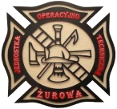
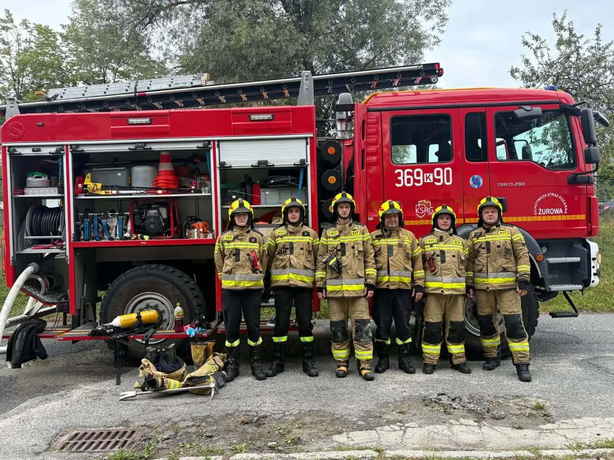
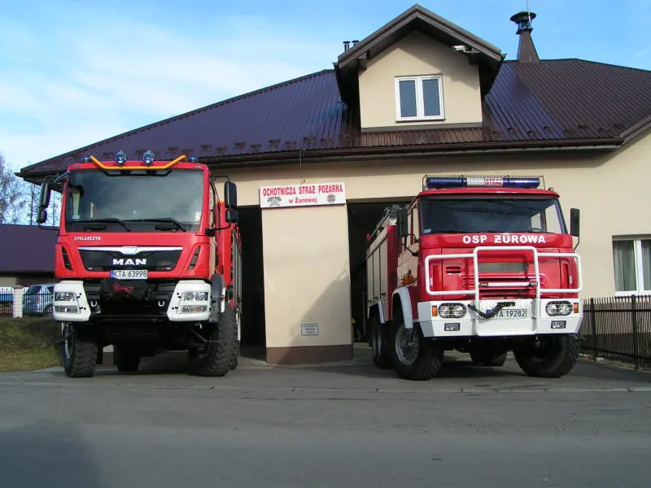
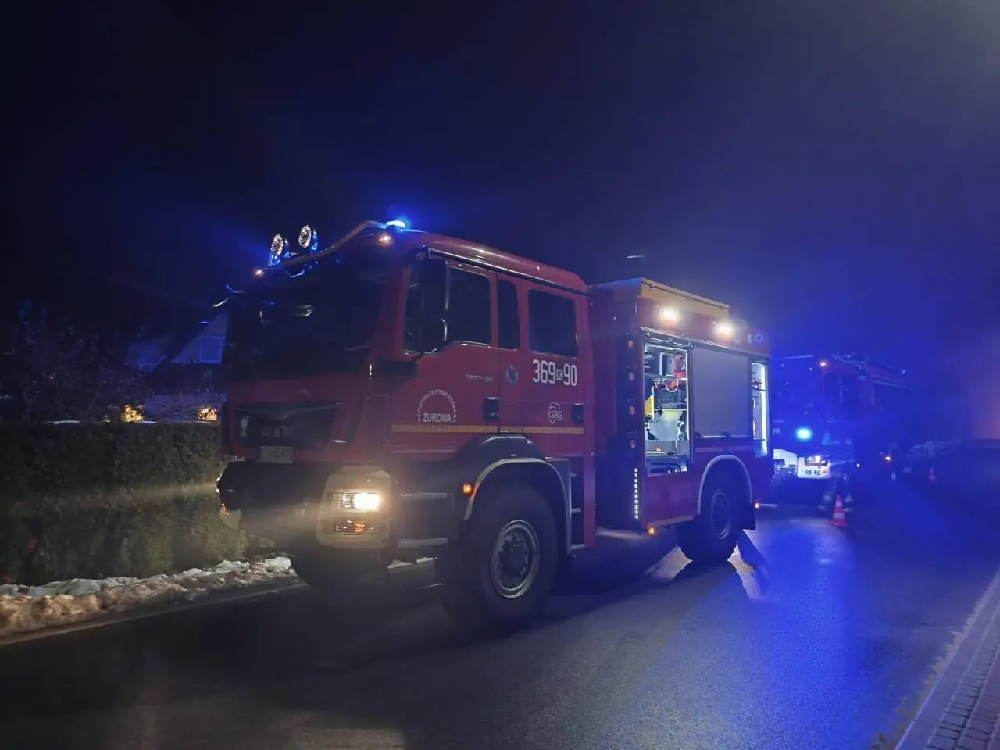

VI Zjazd Oddziału Powiatowego ZOSP RP
W Rzepienniku Biskupim wybrano władze oddziału w Tarnowie na kadencję 2026-2031.

OSP ŻurowaOchotnicza Straż Pożarna
Ochotnicza Straż Pożarna w Żurowej, w Krajowym Systemie Ratowniczo-Gaśniczym od 2001 roku. Wyjeżdżamy do pożarów, wypadków i wichur o każdej porze dnia i nocy.
Ostatnie wyjazdyOd 1912 rokuŻurowa 247, gmina SzerzynyAlarm: 112
Akcje, szkolenia i życie jednostki - z remizy w Żurowej.
W Rzepienniku Biskupim wybrano władze oddziału w Tarnowie na kadencję 2026-2031.
Poczet sztandarowy i MDP na Mszy za Ojczyznę w Żurowej, potem obchody na Gilowej Górze.
"Młodzi Ratownicy w Akcji" - sześć scenek pierwszej pomocy dla wszystkich MDP z gminy.
Liczyły się wiedza, opanowanie i szybkie działanie - gminne manewry w Żurowej.
Pompa pływająca 2400 l/min z programu "Bezpieczny Strażak" WFOŚiGW w Krakowie.
Około 150 metrów oleju na drodze powiatowej - neutralizacja i zmycie jezdni.
Dysponuje nas Stanowisko Kierowania Komendy Miejskiej PSP w Tarnowie. Wybrane wyjazdy z 2026 roku.
12.10.2026 Żurowa
Ok. 150 m oleju na drodze powiatowej. Zamknięty pas ruchu, neutralizatory, zmycie jezdni wodą - prawie 2 godziny.
08.10.2026 Żurowa
Wiatr powalił drzewo na drodze gminnej, drugie nadłamane zwisało nad jezdnią - zdjęte wyciągarką i pilarką.
19.09.2026 Swoszowa
Motocyklista uderzył w drzewo. Kwalifikowana pierwsza pomoc, ewakuacja z terenu leśnego i przekazanie ZRM.
23.07.2026 Żurowa
Nocny wyjazd do domu, w którym zadziałała czujka tlenku węgla.
07.07.2026 Żurowa
Kot od dwóch dni nie potrafił zejść z drzewa - ściągnięty z drabiny.
30.04.2026 Olszyny
Wyjazd w sile dwóch zastępów do pożaru samochodu osobowego.
25.03.2026 Swoszowa
Pożar dachu budynku gospodarczego, dwa zastępy.
23.03.2026 Czermna
Zadysponowani razem z zestawem poduszek pneumatycznych do zdarzenia przy pracach leśnych.
Rok 2025: 33 dyspozycje alarmowe - 14 pożarów i 19 miejscowych zagrożeń, 1170 godzin przy zdarzeniach.
14 lipca 1912 roku ks. Michał Syzder zwołał na plebanii zebranie, na którym zawiązano Ochotniczą Straż Pożarną w Żurowej. Do straży wstąpiło 12 mężczyzn, a mieszkańcy zebrali 100 koron na węże i wyposażenie.
Dwie wojny zabrały nam dwie remizy, a druhowie za każdym razem zaczynali od nowa. W czasie okupacji uratowali przed rekwizycją duży dzwon kościoła w Żurowej. Od 2001 roku jednostka należy do Krajowego Systemu Ratowniczo-Gaśniczego, w 2012 roku obchodziła 100-lecie i otrzymała Złoty Znak Związku.
Przy straży od 1977 roku działa orkiestra dęta, a w remizie spotykają się mażoretki, dzieci z klubu i całe sołectwo.

Trzy samochody w podziale bojowym i sprzęt do pożarów, wypadków drogowych, powodzi i wichur.
369K90
369K58
379K55
Pierwszą drużynę powołaliśmy 1 lutego 2015 roku. Ćwiczymy wyłącznie na sprzęcie, którego używamy w akcjach - i z MDP wyrastają strażacy, którzy dziś wyjeżdżają do zdarzeń.
Przekaż 1,5% podatku na OSP Żurowa. Ciebie to nic nie kosztuje, a pieniądze wracają do jednostki jako sprzęt ratowniczy.
Wystarczą formularze PIT-28, PIT-36, PIT-36L, PIT-37, PIT-38 lub PIT-39. Środki trafiają do nas za pośrednictwem Związku OSP RP.

W nagłym wypadku zawsze dzwoń pod 112. W sprawach jednostki, sali i współpracy - jesteśmy w remizie w Żurowej.
Ochotnicza Straż Pożarna w Żurowej
Żurowa 247, 38-247 Ołpiny
NIP 993-03-32-126, REGON 371011312
Sala balowa na ok. 180 osób - wesela, komunie, bale i imprezy okolicznościowe.